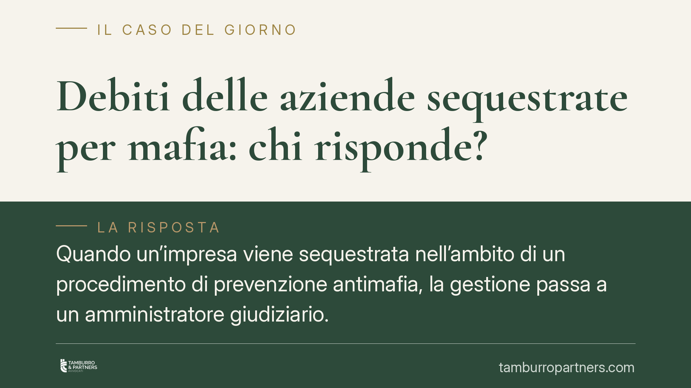

Debiti delle aziende sequestrate per mafia: chi risponde?
Quando un'impresa viene sequestrata nell'ambito di un procedimento di prevenzione antimafia, la gestione passa a un amministratore giudiziario. Resta però aperta una domanda rilevante per fornitori, banche e professionisti: chi risponde dei debiti maturati durante quella gestione? Il tema tocca la capienza del patrimonio sequestrato, il ruolo dello Stato e l'onere della prova.

Il caso tipo
Un'azienda viene sottoposta a sequestro nell'ambito di una misura di prevenzione antimafia. La gestione corrente non si ferma: un amministratore giudiziario, nominato dal tribunale, prosegue l'attività, stipula contratti, paga fornitori, in alcuni casi ricorre al credito.
Alla fine del procedimento emerge il nodo: i debiti contratti in questa fase da chi vanno soddisfatti? Dal patrimonio aziendale sequestrato? Dallo Stato, una volta intervenuta la confisca? E con quali limiti? La risposta ha conseguenze concrete per chiunque abbia intrattenuto rapporti commerciali con l'impresa in gestione giudiziaria.
Inquadramento normativo
La materia è regolata dal Codice antimafia (D.lgs. 6 settembre 2011, n. 159). L'amministrazione dei beni sequestrati è affidata all'amministratore giudiziario sotto la direzione del giudice delegato (artt. 35 e seguenti). La prosecuzione dell'attività d'impresa è disciplinata dall'art. 41, che impone all'amministratore una valutazione sulla concreta possibilità di continuare l'esercizio e subordina gli atti di maggiore rilievo all'autorizzazione del giudice.
Sul piano delle risorse, il D.lgs. 159/2011 prevede meccanismi di sostegno finanziario alla gestione, incluse forme di anticipazione a valere sul Fondo unico giustizia (FUG), nei limiti e con le modalità stabilite dalla normativa di settore. Si tratta di strumenti condizionati: non operano in automatico e presuppongono presupposti e autorizzazioni specifici.
Sul riparto dell'onere probatorio resta centrale l'art. 2697 c.c.: chi vuol far valere un diritto in giudizio deve provare i fatti che ne costituiscono il fondamento. Chi invoca la responsabilità di un determinato soggetto per un debito deve quindi dimostrare il titolo e la qualità in base alla quale quel soggetto ha operato.
Il principio da verificare
La questione del coinvolgimento dello Stato nei debiti della gestione giudiziaria è stata oggetto di attenzione giurisprudenziale, inclusi interventi della Corte di Cassazione a Sezioni Unite. L'orientamento che si va delineando esclude un'automatica responsabilità dell'erario per i debiti maturati durante l'amministrazione: la soluzione dipende dalla qualità in cui l'amministratore ha agito e dalla sussistenza delle autorizzazioni richieste per eventuali anticipazioni a carico di risorse pubbliche.
Nota redazionale di accuratezza. Il riferimento a una specifica pronuncia delle Sezioni Unite citata in sede divulgativa (indicata come n. 26806/2026) non risulta verificabile e la datazione appare incoerente con una massima presentata come già operante. In assenza di riscontro ufficiale sugli estremi esatti (numero, anno, sezione), questo contributo non ancora alcun principio a quella pronuncia e si limita a esporre il quadro normativo vigente. Gli estremi esatti di qualsiasi sentenza devono essere verificati sulle fonti ufficiali prima di farne uso in giudizio.
Implicazioni pratiche
Per chi contratta con un'impresa in amministrazione giudiziaria, il profilo decisivo è il rischio di credito ancorato alla capienza del patrimonio sequestrato. Non esiste una garanzia implicita dello Stato: l'aspettativa di pagamento si misura, in primo luogo, sulla consistenza dei beni in gestione e sulle autorizzazioni che assistono i singoli atti.
Conta poi la qualità giuridica dell'atto: un contratto autorizzato dal giudice delegato ha una collocazione diversa rispetto a un'obbligazione assunta al di fuori dei poteri gestori. Fornitori, banche e professionisti hanno interesse a documentare con precisione il titolo, l'autorizzazione e la fase in cui l'obbligazione è sorta, proprio perché su di loro grava l'onere probatorio dell'art. 2697 c.c.
Cosa fare in concreto
- Verificare, prima di contrattare, se e come l'atto è autorizzato dal giudice delegato e conservare la documentazione relativa.
- Valutare il rischio di credito sulla base della capienza del patrimonio sequestrato, non su un'aspettativa di copertura pubblica.
- Distinguere con chiarezza le obbligazioni sorte nella gestione autorizzata da quelle estranee ai poteri dell'amministratore.
- Precostituire la prova del titolo e della qualità in cui ha agito la controparte, in vista di un'eventuale azione di recupero.
- Prima di fondare una pretesa su un precedente giurisprudenziale, accertare gli estremi esatti della pronuncia sulle fonti ufficiali.
Disclaimer
Contributo informativo a cura di Tamburro & Partners - Avv. Giuseppe Tamburro. Non costituisce parere legale.
Ogni contratto ha il suo equilibrio.
Se vuoi una revisione delle clausole o una redazione su misura, scrivi allo studio. Ti rispondiamo entro un giorno lavorativo.